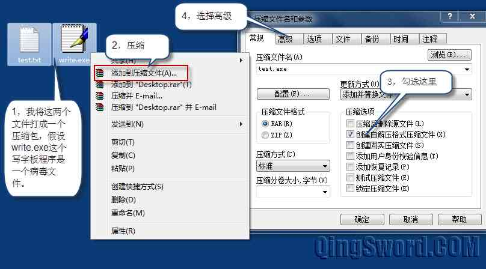
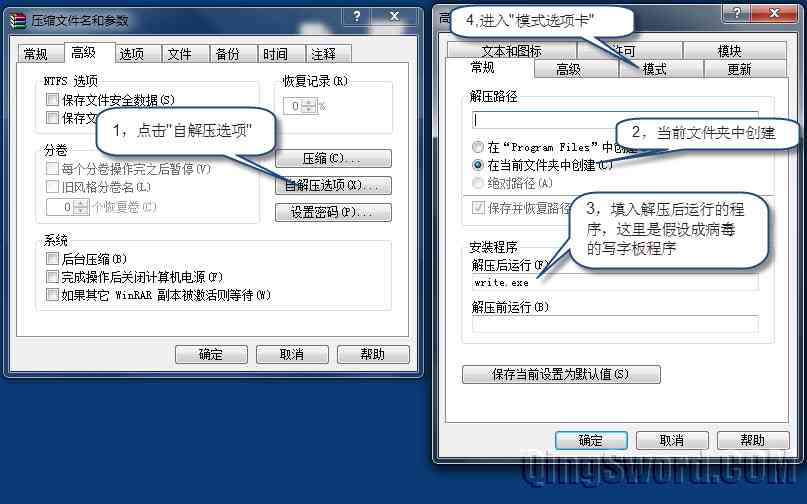
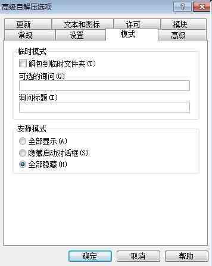
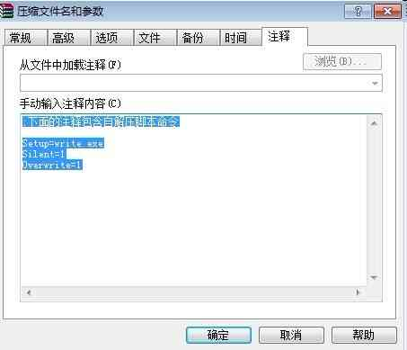
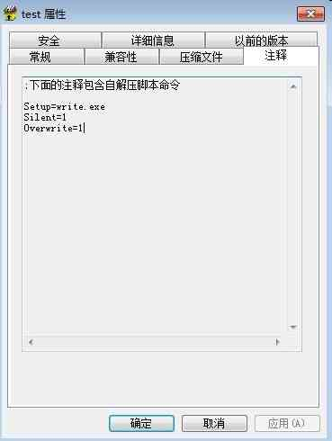
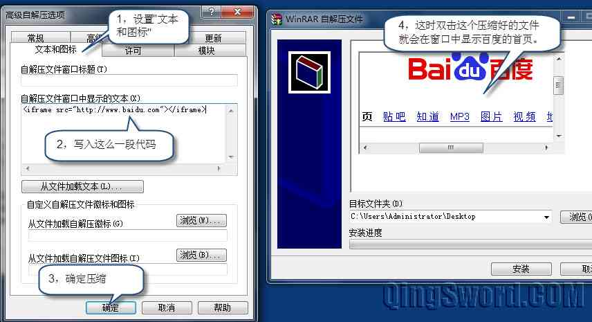

如何防范WinRAR自解压格式病毒
引言
这篇文章介绍一下WinRAR这款压缩软件所存在的安全隐患，并且给出防范的方法。
相信大家对WinRAR这款经典的压缩软件并不陌生，而且几乎每天都用到，那么我们就有必要了解一下这款压缩软件功能上存在的几个"有机可乘"的地方。
文章目录
0×1.安全隐患的形成
实例一：在桌面上创建一个test.txt的文本文件，这个文件模拟正常程序，再从系统目录复制出来一个写字板（文件路径在系统安装目录的"windows\write.exe"）程序模拟病毒程序，实验目的是，将这两个程序打成一个自解压格式的压缩包，让解压后自动运行write.exe程序。
在使用WinRAR进行压缩时，有一个可选项叫"创建自解压格式压缩文件"如下图：
 在上面第二张图中，不同版本的WinRAR显示的"高级"选项框可能有细微的差别，一些版本"解压后运行"单独放在"设置"选项标签中，而"常规"选项标签中的内容为灰色不可选，不会影响最终的效果，只需要设置解压后运行的程序即可。
将模式中"安静模式"设置成"全部隐藏"：
更新标签中，按照下图设置"覆盖所有文件"，高级设置就完成了，确定：

回到下面这个界面，将注释中的内容全部删除，然后确定完成压缩：
如果在上面这一步中不删除注释中的内容，压缩后，在这个自解压文件的"属性"->"注释"中将会看到下面的内容，很容易就看到解压后会运行的程序，并且携带了隐藏运行和覆盖所有文件的参数：
压缩完成后，将这个创建好自解压格式的文件，随便放在哪个目录下双击它，你会发现"写字板程序(write.exe)"运行了。而且这种模式可以覆盖任何同名文件，可以在存在test.txt和write.exe的目录下运行，它会覆盖所有存在文件且不需要确认，如果这个write.exe程序是一个隐藏运行的木马或者病毒，并且在运行后自删除本身，那这时候病毒或者木马就悄无声息的运行了。
实例二：同样创建一个自解压文件，这次不携带任何文件模拟病毒或木马，这一次让双击这个自解压文件的时候，在解压缩窗口中显示一个网页。
前面的步骤相同>"创建压缩文件">勾选"创建自解压缩格式压缩文件">"高级">"自解压选项"。
这一次在这个"自解压选项"中其他都不用设置，唯一需要设置的是"文本和图标"，如下图所示（注意，为了让压缩软件不产生注释，按照前面介绍的方法删除注释中的全部内容，否则在压缩软件的属性中很容易察觉到嵌入了一条HTML指令）：
到这里大家应该都明白了，如果网络畅通的情况下，WinRAR允许在自解压的安装界面中打开一个网页，假设这个网页本身就是个带病毒的网站，挂着一些木马或者病毒，这时候木马也就被执行了。
而如果上面的显示文本改成：
//为了不产生连接，下面的代码中的连接地址中http后面使用了中文的说明号"："，请在使用时改成英文说明号":" <iframe src="http：//www.baidu.com" width=0 height=0></iframe>
那么，在上图第4步中将看不到任何网页，看到的是一片空白，但是网页代码还是执行了。因为设置了width=0，height=0，高度和宽度是0。
0×2.如何防范
了解了原理之后，来讲一下如何防范，首先我们养成安装杀毒软件开启实时监控的方法是正确的，但部分病毒和木马并未被提交到杀毒软件的病毒库中，而对于WinRAR自解压这类型的安全隐患还有一种更简单的方法可以避免以上两种事件的发生，不论哪种情况，遇到解压文件的时候，对文件点击鼠标右键，选择"解压缩文件"或者"解压缩到"来解压，大家可以去实验一下，这时解压后不会运行指定的文件，也不存在打开某页面的界面出现。